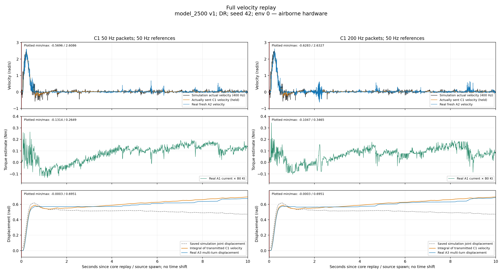
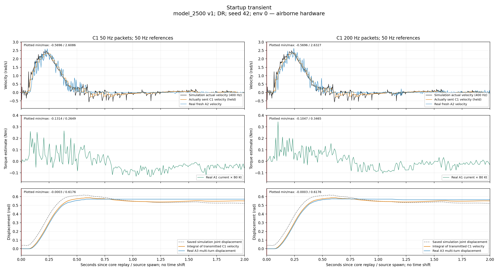
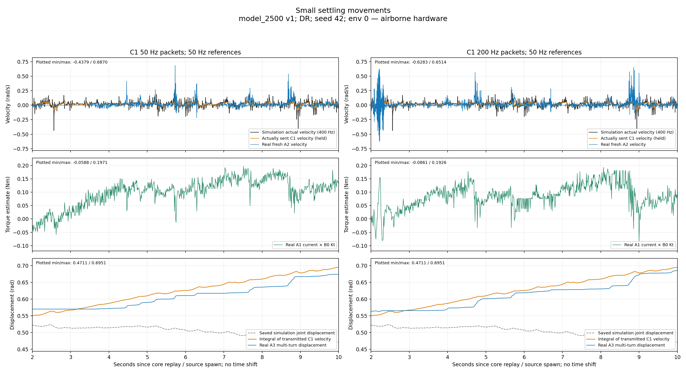
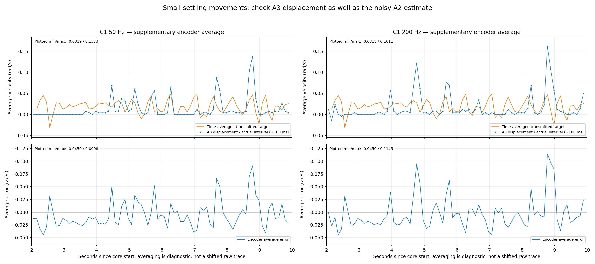
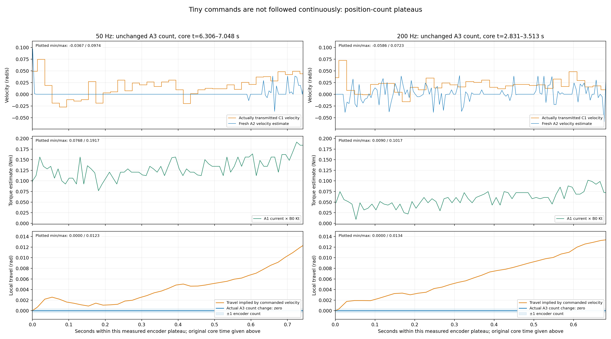
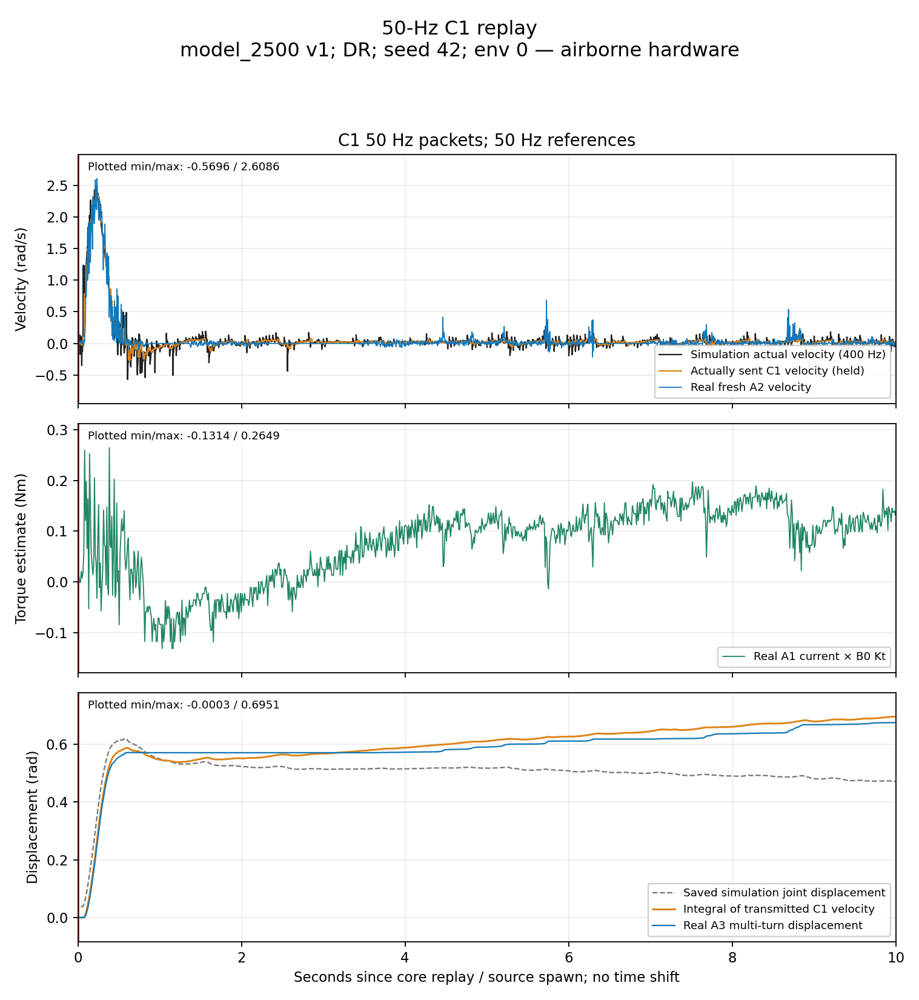
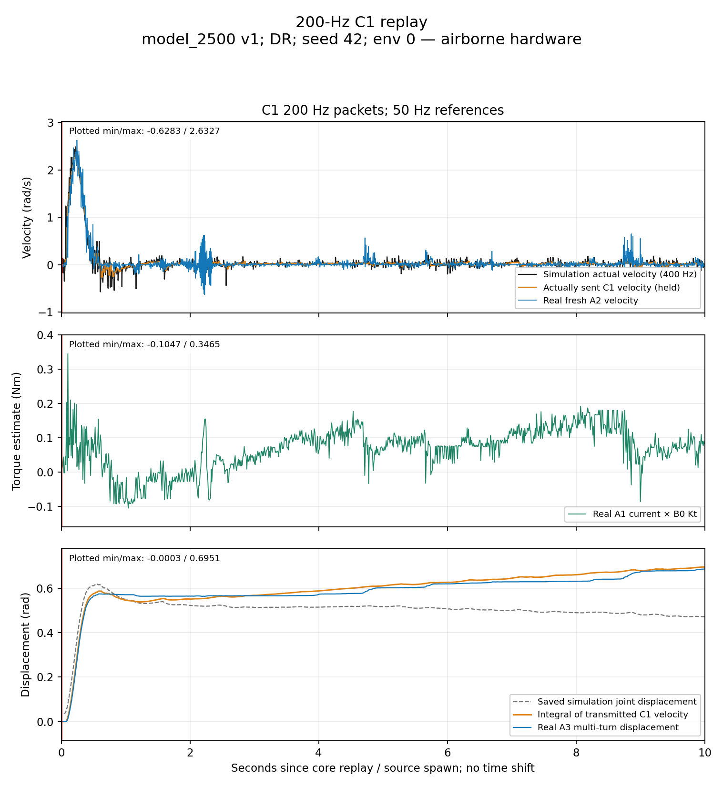

Model 2500 v1 · DR · airborne/free · unchanged settings. Large startup motion is reproduced; precise small settling-waveform tracking is not established.
Report · All figures PDF · Metrics CSV · Exact statistics






